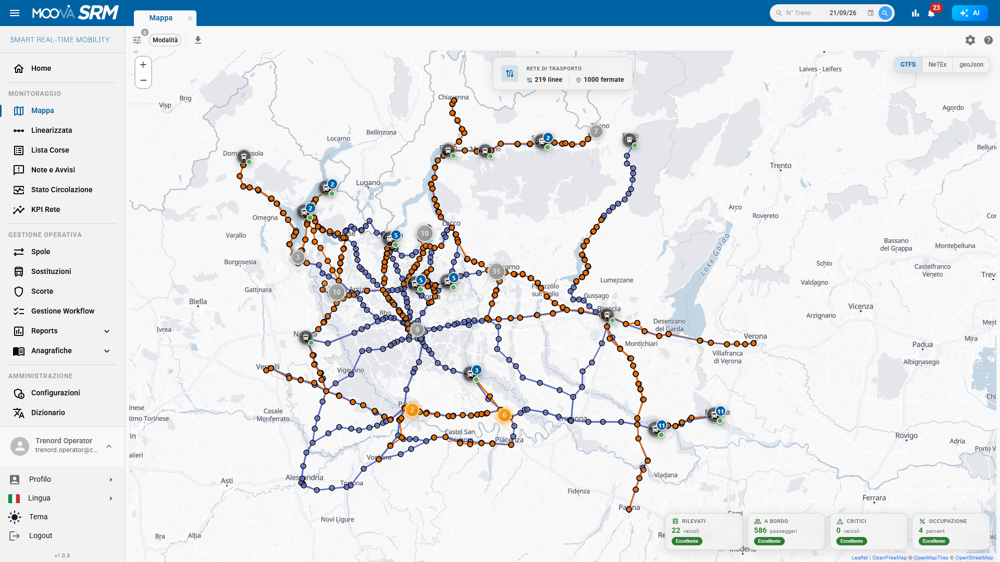
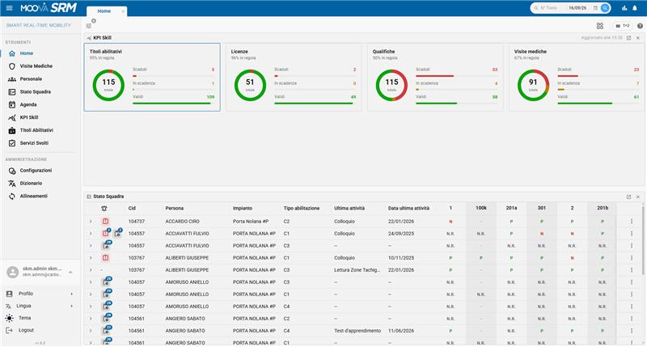

MOOVA SRM · Smart Real-Time Mobility
La piattaforma integrata per l'esercizio e le competenze.
SRM riunisce in un unico ecosistema il monitoraggio della circolazione, la gestione operativa del trasporto e il mantenimento delle competenze del personale. Multimodale, modulare e integrabile con i sistemi aziendali, supporta operatori, istruttori e amministratori nei processi quotidiani e nelle decisioni basate sui dati.


Perché SRM
Monitorare, gestire, qualificare — da un unico ecosistema
SRM coordina dati operativi e informazioni sul personale per offrire una visione completa del servizio: dalla posizione delle corse e dagli eventi di esercizio fino ad abilitazioni, visite mediche, valutazioni e continuità operativa. Dashboard, KPI e alert trasformano i dati in azioni tempestive e verificabili.
Strumenti di monitoraggio
Tutti i classici strumenti del monitoraggio — mappe, liste, viste linearizzate, schede di dettaglio, storico dei percorsi — per corse vestite e non.
Gestione operativa
Avvisi, allarmi e motivi di ritardo, scorte e spole, vestizione dei mezzi e del personale: la gestione operativa in un unico posto.
AI a supporto
Strumenti di intelligenza artificiale integrati a supporto del monitoraggio e della gestione operativa.
Configurabile
Home a widget personalizzabile, cataloghi, tipi di nota/avviso, ruoli e soglie gestiti a runtime. Dizionario multilingua integrato.
Leggera sull'hardware
Sviluppata per richiedere poche risorse hardware: può girare anche su cluster di piccole dimensioni.
Multimodale nativa
Focus spiccato sul monitoraggio multimodale, con algoritmi per il calcolo di coincidenze e corrispondenze e strumenti dedicati agli interscambi.
Ottimizzata per mobile
Interfaccia pienamente responsiva: la sala operativa e gli strumenti di monitoraggio funzionano perfettamente anche da smartphone e tablet.
App terra-bordo
Applicazione dedicata alla comunicazione terra-bordo, con interfacce già progettate — alcune già implementate — per il personale a bordo.
Ticketing e triage
Gli operatori aprono segnalazioni direttamente dallo strumento: ogni evento diventa un ticket tracciato. Un sistema di triage smista automaticamente le segnalazioni verso il canale di risoluzione corretto, accelerando la presa in carico.
I fondamenti
Costruita sugli standard e lavorando a stretto contatto con i clienti
Questi sono i fondamenti effettivi della piattaforma: non solo l'aderenza ai modelli dati del trasporto pubblico — che rende SRM interoperabile e a prova di futuro, evitando il lock-in — ma anche anni di esperienza sul campo con i clienti del settore, tradotta in funzionalità concrete e implementate.
Architettura
Cloud-native, API-first ed event-driven
SRM separa i domini operativi in servizi autonomi e integra sala operativa, dati di rete, corse, personale, documenti e funzionalità di IA attraverso contratti versionati ed eventi real-time.
Microservizi per dominio
Servizi indipendenti per rete, corse, monitoraggio, scorte, personale, anagrafiche, dizionari e documenti, con responsabilità e cicli di rilascio separati.
API-first e contratti versionati
API REST documentate con OpenAPI; eventi descritti con AsyncAPI e JSON Schema. I consumer dipendono dal contratto, non dall'implementazione.
Real-time event-driven
Kafka e Kafka Streams elaborano eventi operativi, ricostruiscono lo stato delle corse e distribuiscono snapshot e aggiornamenti live.
Dati isolati per servizio
PostgreSQL, PostGIS e MySQL supportano i diversi domini; Liquibase governa gli schemi. Lo stato degli stream usa RocksDB e changelog Kafka.
Cloud-native e GitOps
Container su Kubernetes ed EKS, chart Helm per applicazione e configurazioni per ambiente nel repository GitOps, con immagini distribuite tramite ECR.
Security by design
Identità e ruoli con Keycloak e OIDC, accesso alle API tramite APISIX o WSO2, segreti Kubernetes e autenticazione SASL/SCRAM per Kafka.
Resilienza e osservabilità
Health check Kubernetes, metriche e log strutturati rendono verificabili servizi e pipeline; l'adozione viene uniformata progressivamente sull'intera piattaforma.
IA sulla piattaforma
In ambiente SRM Lab, Ollama esegue modelli conversazionali ed embedding su nodi GPU dedicati, con storage persistente EFS.
Il prodotto
Uno sguardo dentro SRM
Esplora le funzionalità operative, la comunicazione terra-bordo, gli strumenti di intelligenza artificiale e la gestione delle competenze per area. Apri una scheda per vedere immagini, video e dettagli.
Il team
Il gruppo di lavoro che ha realizzato SRM
SRM nasce nell'area Smart Service for Transport Operator come iniziativa per studiare le nuove tecnologie legate all'intelligenza artificiale e per rendere più snella l'introduzione di modifiche nei progetti attivi. Il gruppo di lavoro qui presentato lo ha ideato, progettato e realizzato interamente e ne presidia l'intero ciclo di vita: dall'analisi dei processi di esercizio, condotta in stretta collaborazione con i clienti, alla definizione dell'architettura, dallo sviluppo al rilascio in produzione, fino all'evoluzione funzionale della piattaforma. Direzione tecnica, gestione di progetto e sviluppo operano in modo integrato, con responsabilità chiare e un riferimento comune: la qualità del prodotto in esercizio e la soddisfazione dei clienti.
SASolution architect
Definiscono architettura e funzionalità del core e garantiscono la coerenza di ogni implementazione.
PMProject manager
Governano pianificazione, priorità e rilasci, traducendo le esigenze dei clienti in requisiti.
SDSoftware designer
Progettano e realizzano microservizi, interfacce, integrazioni e componenti di IA.
SAPMCooperano alla crescita del prodotto: condividono roadmap e priorità, perché ogni evoluzione resti coerente con il core.
Conduzione del progetto
Per ogni cliente è previsto un riferimento dedicato per ciascun ruolo:
Metodo di lavoro
Specifiche definite, implementate e validate con il supporto dell'intelligenza artificiale
Ogni evoluzione di SRM parte da specifiche condivise, che guidano sviluppo e verifica.
Definizione delle specifiche
SAPMIAAnalisi di completezza, coerenza e impatto sui componenti esistenti.
Implementazione
SASDIASupporto alla scrittura e al refactoring del codice e alla documentazione tecnica.
Validazione
SAPMSDIAGenerazione dei casi di test, revisione del codice e analisi delle regressioni.
Tracciabilità
SASDIAAggiornamento della documentazione e verifica dell'allineamento con il codice.
Dove stiamo andando
La roadmap del percorso
Le fasi del progetto in colonna, collegate dalla dorsale. Clicca una fase per aprire o chiudere le sue attività; passa sopra una fermata per il dettaglio completo.
➜Apri la mappa della roadmapFasi e attività su una pagina dedicata, più leggibile da telefono.›